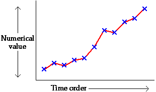

Changes over time
One of the most important functions of Official Statistics is to monitor changes of societies over time. Many demographic, social and economic measurements are recorded monthly or annually and systematic changes to these measurements are important to detect and report.
The simplest form of time series consists of a single measurement that is recorded at regular intervals (usually yearly, monthly or daily). A scatterplot of the values against time is called a time series plot or time series chart. By convention, time is always plotted on the horizontal axis and successive crosses are usually joined by lines.

Defence Investment in USA
The table below describes the investment in defence in the USA between 1947 and 2006. (Because 1947 dollars were worth less than 2006 dollars, all values have been adjusted for inflation and are reported in 2000 dollars', allowing more meaningful comparisons between the years)
|
|
|
|
Although it is possible to see some patterns in the table above, the trends are clearer in a time series plot.
Click on crosses to read off exact expenditures. It is interesting to try to associate the peaks and dips in this time series plot with government administrations and international events! A manufacturer in the defence sector might also hope to predict future government expenditure from the trend in recent years.
Pigs in Thailand
The time series plot below shows the numbers of pigs in Thailand each year between 1960 and 2006.
Click on crosses to read off the number of pigs in any year.
Regional population growth in New Zealand
Our final four time series describe the population growth rates in the four regions of New Zealand with the largest urban populations between 1996 and 2006. Predictions of population growth are important to governments — the infrastructure of education and health services must be expanded to cope with increases — and to retail businesses who will want to site outlets in areas of growth.
Observe that: